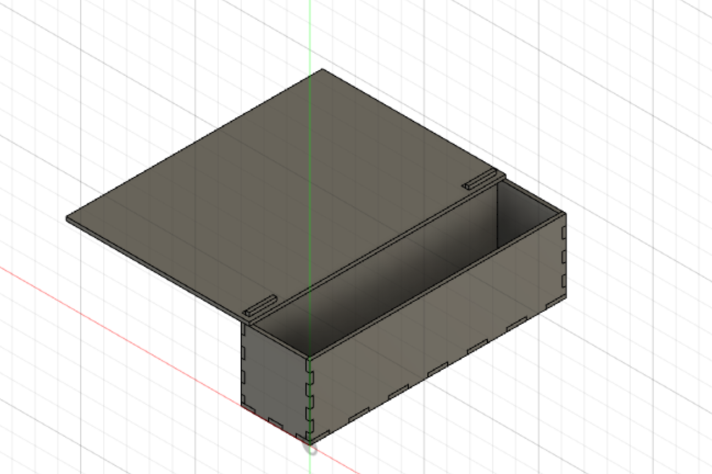
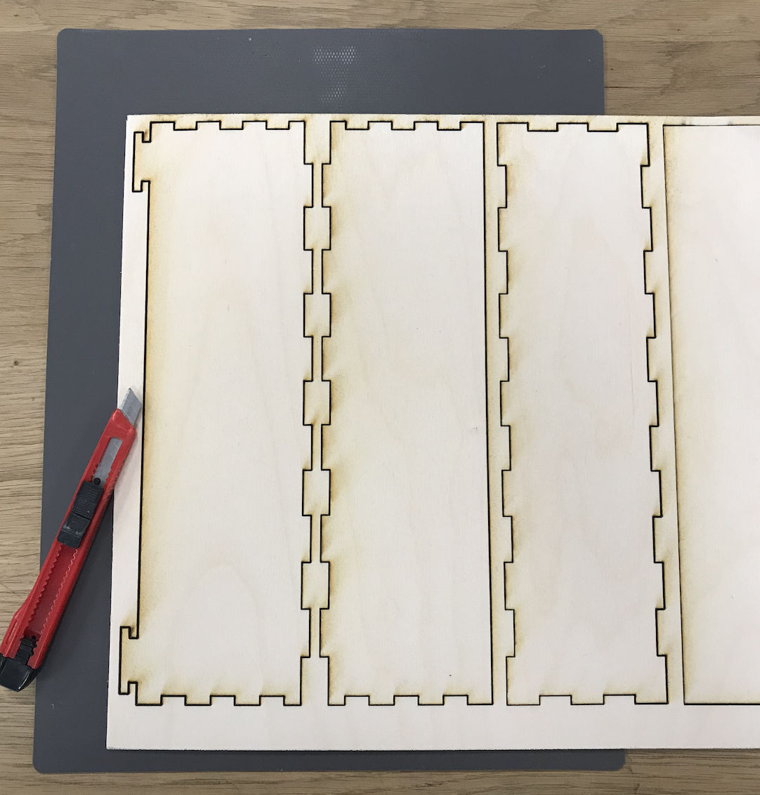

Verkefni 2 - Geislaskeri
Undirbúningur
Þetta er verkefni tvö í áfanganum VÉL403G, sem Hafliði Ásgeirsson kennir vorið 2021. Verkefnið er tvískipt, annars vegar er það einstaklingshlutinn og hóphlutinn.
Í einstaklingshlutanum á að hanna parametrískt, gerneglt (pressfit) módel af byggingar einingum. Módelið þarf að vera skalanlegt þannig hægt sé að stilla kerf og efnisþykkt, ásamt stærðum á flötum, með því að vinna með parametrískar breytur. Hægt er að velja á milli þriggja gerða af efni.
Í hóphlutanum á að velja geislaskera og ákvarða með prófunum kerf fyrir þann skera. Skjalfesta á sameiginlegri vefsíðu sem allir í hópnum geta hlekkjað á. Ég vann verkefnið með Andra Dag Ófeigssyni og Björg Evu Steinþórsdóttur.
Kerf prófun
Geislinn í geislaskeranum tekur brennur hluta efnisins í burt sem mikilvægt er að gera ráð fyrir í teikningunum. Þetta kallast kerf en sú vegalengd er mismikil eftir hverjum geilsaskera. Hópurinn minn ákvað að stóra geilsaskerann, eða þann sem er innst í FabLab. Hér má sjá hvernig farið var að því en í lokinn mældist kerf-ið upp á 0,22 mm.
Hugmyndavinna
Hafliði Ásgeirsson, kennari námskeiðsins, setti inn hugmyndir af vel unnum verkefnum og þar var verkefni Ívars Dórs Orrasonar sem mér þótti afar áhugavert. Ég ákvað að prófa mig áfram með þá hugmynd en eftir mikla umhugsun ákvað ég að fara í aðra átt þar sem ég sá ekki fram á að ég gæti gert mína hönnun án þess að kaupa meira efni, sem ég vildi helst halda mér frá.
Þá var komið að því að leggja höfuðið í bleyti. Ég skráði niður þær hugmyndir sem mér þótti sniðugar en ég vildi gera eitthvað sem myndi svo koma að góðum notum. Mér datt í hug að búa til skurðarbretti með skúffu fyrir rusl. Til að gera mér betur grein fyrir því hvernig þetta ætti að líta út ákvað ég fyrst að teikna hugmyndina upp á blaði, þá teikningu má sjá hér.


Vinna í Fusion 360
Eftir að hafa horft á afar góð myndbönd um hvernig best væri að vinna í Fusion 360 og um hvernig best væri að teikna upp hugmyndina með hjálp "parameters". Það er gert til þess að tryggja að hægt sé að breyta ákveðnum stærðum, eins og lengd brettis, og að teikningin aðlagi sig svo að þessum breytingum.
Ég byrjaði á að skilgreina "parameters". Á myndinni hér að neðan má bæði sjá hvar það var gert og hverjir þessir "parameters" voru.


Ég fékk ráðleggingu frá kennara að nóg væri að "fra_bretti_festing" þyrfti einungis að vera 5mm, en það er lengdin frá byjun festingar til enda brettis. Ég vildi hafa þessa lengd sem styttsta en nógu langa þannig þessi hluti brettisins myndi ná að halda boxinu án þess að það myndi brotna, til dæmis ef mikið af afgöngum væru í kassanum.
Ég byrjaði á að teikna botninn í kassanum. Þá teiknaði ég rectangle og notaði þær viðeigandi breytur í lengd og breidd á botninum, sem ég hafði þá skilgreint í "parameters". Því næst "extrude-aði" ég botninn um lengdina "thykkt".
Til að búa til "fingers" - festingarnar teiknaði ég rectangle á þá hlið sem festingarnar áttu að vera, og ýtti á „d“ fyrir dimention og setti „lfingersb“, bæði fyrir stærð kassans sem ég teiknaði og lengd hans frá endanum. Síðan ýtti ég á „extrude“ til að fá þetta inn um „thykkt“. Fór svo í „create menu“ og ýtti á „rectangular pattern“ og ýtti á „extrude-ið“ mitt. Ég valdi átt og svo var fjöldinn var „lfingers“ og „distance“ var sett á –(lengd-(lfingersb*3)), mínusinn í byrjun því áttin í stillingunum var í öfuga átt.
Til að gera hliðarnar valdi ég 3 point rectangle og ýtti á byrjunarpunktinn og svo notaði ég parametrana til að setja hæð og lengd. Þá var mikilvægt þegar ég extrudea-aði um þykktina að operation var „new body“. Ég fór svo í modify, í combine og stillti target body þann sem átti að skera og tool bodies þann sem fingers var búið að setja á. Hakaði við kepp tools og gerði operation „cut“. Til að fá eins á hina hliðina, notaði ég extrude, stillti „start“ á object, þá valdi ég hina hliðina og valdi í operation „new body“.
Svo var komið að því að teikna brettið sjálft. Eftir að hafa skoðað mörg bretti á heimasíðu Ikea, taldi ég lengdina og breiddina 280X200 mm. Ég teiknaði það upp og stillti þykktina. Ég teiknaði brettið ofan á kassann og var því komin með brettið eins og það var þegar það var sett saman. Þá "cuttaði" eftir minni hluta festingarinnar út brettinu. Því næst "cut-aði" ég fyrir stærri hluta festingarinnar. Á myndinni hér að neðan má sjá brettið samansett í Fusion 360.
Þegar ég var búinn að setja hlutinn allan saman afritaði ég alla hlutana og límdi, því næst notaðist ég við verkfærið "align" til þess að fletja alla hlutina þannig að þeir væru allir á sama plani. Því næst fór ég í "new scetch" og í "project" og "include-aði" alla hlutina.
Búið var að mæla kerf á þeim laserskera sem ég hafði ákveðið að notast við. Hópurinn minn mældi að það væri 0,22 mm svo nú var komið að því að "offset-a" um það sem nemur helmingnum af kerf-inu.
Nú var teikningin af hlutunum flötum út "export-að" í dxf file.
Vinna í Inkscape
Þegar ég fór í inkscape og ætlaði að setja dxf fileinn af teikningunni þar þá setti ég "method of scaling" sem "manual scale". Inn í inkscape í "document properites" breytti ég svo "custom size" í "units: mm" og setti breidd sem 600 mm og hæð sem 300 mm, sem nemur efninu sem ég sker út. Í stroke style breytti ég í 0,022. Svo eyddi ég þeim línum sem tilheyrðu upphaflegu teikningunni og var með það sem nemur teikningunni + kerf/2 standa. Sú teikning var svo sett í laserskerann. Hér að neðan má sjá mynd af öllum hlutunum úr Inkscape, þetta pdf var svo sett á minnislykil og fært yfir í laserskerann.

Laserskeri
Viðeigandi stillingar voru settar á í "vectorum" áður en farið var að skera. Á myndinni hér að neðan má sjá viðinn á meðan laserskurðinum stóð. Nálægð geislaskerans við viðinn var stilltur á sama hátt og gert var í hópverkefninu, þ.e. z-, y- og x-ásarnir voru stilltir.

Hér má sjá hvernig þetta leit út eftir að búið var að skera út.

Laserinn náði ekki alveg að skera í gegn svo ég þurfti að nota dúkahníf til þess að skera alveg í gegn og brjóta svo endana til þess að hlutirnir myndu passa saman. Þetta má sjá á næstu mynd.
Lokaniðurstaða
Verkefnið gekk vel fyrir sig. Ég þurfti þó að teikna brettið og boxið nokkrum sinnum upp í Fusion 360 þar sem ég hafði óvart eytt út hlutum og ætlað að setja aftur inn en þá birtist viðvörunar um að nú gæti verið að hlutirnir pössuðu ekki allir saman. Þá ákvað ég að teikna hlutinn aftur út.
Einnig gerði ég þau mistök að láta kennarann ekki vita strax þegar ég sá að laserinn hafði ekki skorið efnið alveg í gegn og þurfti því að nota allskyns verkfæri, eins og dúkahníf, til að skera brettið út. Í staðinn fyrir að taka efnið strax úr laserskeranum hefði ég annars getað farið aðra ferð yfir í laserskeranum.
Ég gerði festinguna á kassanum og brettinu þannig að hún passaði einmitt í sem voru mistök sem var svo auðvelt að leysa. Ég hafði sett teikninguna þannig upp að þetta passaði akkúrat saman en áætlunin var að auðvelt væri að taka kassan úr og setja í svo ég endaði á að taka sirka 3mm af hvoru megin við stærri hluta festingarinnar eða sú breyta sem í "parameters" heitir festing_stor. Þá passaði þetta allt vel saman. Hér að neðan má sjá mynd af brettinu þegar það var tilbúið.


Brettið er þó ekki alveg tilbúið svona. Ég hafði hugsað mér að kaupa þetta bretti frá Ikea, og skera það út þannig það myndi passa á, þar sem krossviðurinn er ekki besti viðurinn til þess að skera mat á.
Hér má finna hönnunarskjölin.